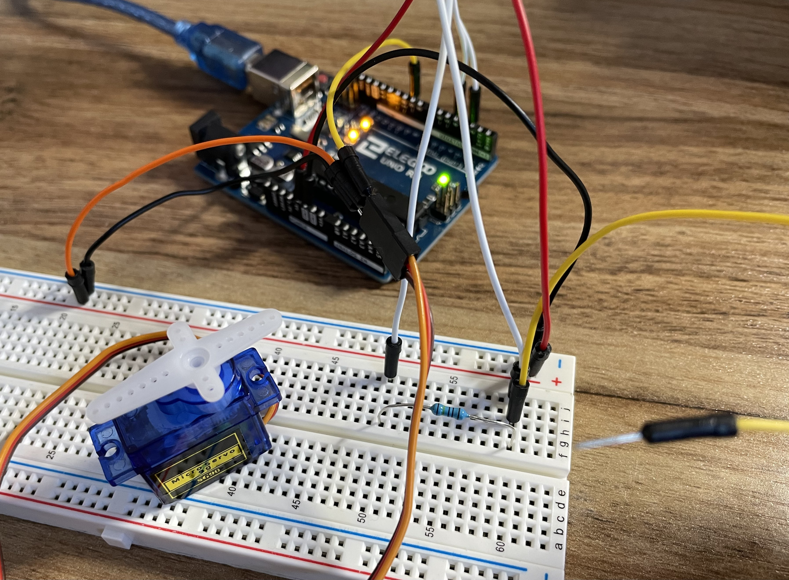
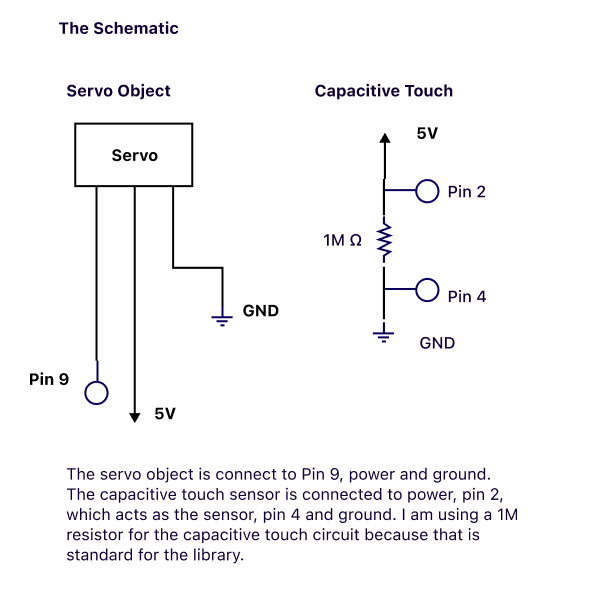
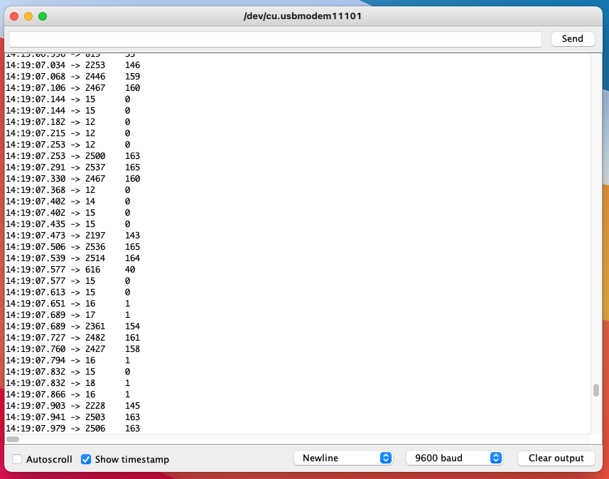
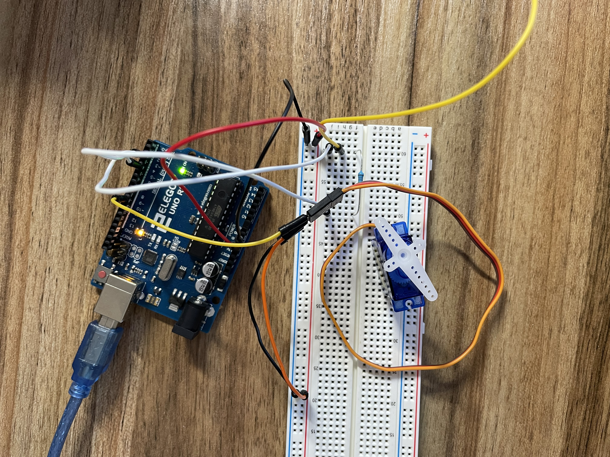

Libraries

Assignment
For this assignment, I am using the Servo and Capacitive Touch libraries. The Capacitive Touch sensor inputs controls the Servo output angle.
The Schematic

Here is my schematic for the Servo object and the capacitive touch sensor.
The Code
#include < Servo.h> // include Servo library
#include < CapacitiveSensor.h> // include Capacitive Sensor library
Servo myServo; // create a servo object
CapacitiveSensor cs_4_2 = CapacitiveSensor(4,2); // 1M ohm resistor between pins 4 & 2
int sensorValue = 0; // the sensor value
int sensorMin = 2000; // minimum sensor value, set to higher than expected
int sensorMax = 0; // maximum sensor value, set to lower than expected
void setup() {
Serial.begin(9600); // initiate serial to 9600 baud
myServo.attach(9); // attaches the servo on pin 9 to the servo object
while (millis() < 5000) { // run for 5 seconds
sensorValue = cs_4_2.capacitiveSensor(30); // gather sensor value from touch
if(sensorValue > sensorMax) { // if sensor value is greater than current max
sensorMax = sensorValue; // record the maximum sensor value
}
if(sensorValue < sensorMin){ // if sensor value is less than current min
sensorMin = sensorValue; // record the minimum sensor value
}
}
}
void loop() {
sensorValue = cs_4_2.capacitiveSensor(30); // get sensor value
Serial.print(sensorValue); // print to sensed value
Serial.print("\t"); // print tab to serial
sensorValue = map(sensorValue, sensorMin, sensorMax, 0, 180); // map sensed value to 0, 180
Serial.print(sensorValue); // print to serial mapped value
myServo.write(sensorValue); //some angle between 0 and 180
delay(15); // 15 ms to allow servo to move
Serial.println(); // tab character for debug window spacing
delay(10); // 10 ms delay
}
This is the code I used to develop the behavior I wanted. See the comments in the code for further explanations.
Serial Monitor Output

Here is a sample screenshot of the output text in my serial monitor.
My breadboard

Here is my breadboard with a capacitive touch sensor that controls the angle of the servo object.
Touch, Rotate!

Touch the yellow wire to change the Servo object angle!